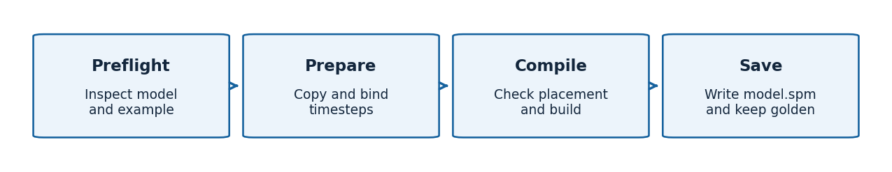

Preparation, compilation and artifacts#
Use preflight for early warnings and
the quick start for a CPU-checked export. compile owns
exact acceptance; load returns the saved package/program rather than
recreating the original training or compiler object.

The workflow below generates and verifies a T,H,W,C golden before saving the package.#
Inspect and prepare#
Run this workflow from the repository root with the compiler extra installed. The model and representative input come from the quick start. The bitstream filename selects the matching compile profile.
- preflight(model, example=None, *, target='pynq-z2', bitstream=None)#
Report early risks with isolated executable inspection and preserved CPU RNG.
Static inventory does not copy the model. Custom Python code can still affect external state; CUDA RNG is not saved. This advisory report does not replace compiler validation.
- format_preflight(report, *, compilation=None)#
Render existing diagnostics without inspecting or compiling a model.
Pass the
check()report for the same model, example and target ascompilation. Reports are snapshots; rerun them after model changes.
- prepare(model, example, *, target='pynq-z2', bitstream=None, decay_quantization='exact', max_decay_abs_error=None, allow_if_conversion=False, policy=None, max_decay_error=None, validate=True, allow_host_ops=False, host_precision=None, input_domain=None, max_workspace_bytes=67108864)#
Copy a native model, bind T, and report any retention projection.
INT4 fake quantization stays in the native layers’ differentiable forward path. Preparation never silently changes trained weights or thresholds. Train/eval mode is preserved, and compatibility checks that returned mode. Call
model.eval()before preparing a deployment copy. An optimizer for the original parameters does not update the returned model. Withvalidate=False, compiler compatibility and count capture are not run. CPU RNG is preserved; CUDA RNG and arbitrary external Python side effects are not isolated.
import runpy
import spikepress
model, events = runpy.run_path("examples/compile_model.py")["make_model"]()
bitstream = "bitstreams/pynq-z2/spikemold.bit"
inventory = spikepress.preflight(model, events, bitstream=bitstream)
message = spikepress.format_preflight(inventory)
assert isinstance(message, str)
prepared, report = spikepress.prepare(model, events, bitstream=bitstream, validate=False)
assert report["compatibility"]["status"] == "NOT_RUN"
preflight reports early concerns and format_preflight renders them as text.
prepare binds the representative shape and timestep settings on a copy.
Here validate=False defers the compatibility check to the next step.
Check and compile#
- check(model, example_input, *, target='pynq-z2', bitstream=None, allow_host_ops=False, host_precision=None, input_domain=None, max_workspace_bytes=67108864)#
List known reasons a model cannot use the selected backend.
- compile(model, example_input, *, target='pynq-z2', bitstream=None, model_id=None, decay_quantization='exact', max_decay_abs_error=None, allow_if_conversion=False, temporal_stage_groups=None, policy='compatible', result_mode='events', allow_host_ops=False, host_precision=None, input_domain=None, max_workspace_bytes=67108864)#
Compile an SNN, optionally selecting its profile from verified bitstream files.
Use check for an acceptance report. Compile the prepared model and use
compile_input on the returned compiler object to generate the integer golden
in T,H,W,C order for this temporal path.
acceptance = spikepress.check(prepared, events, bitstream=bitstream)
assert acceptance["accepted"] is True
compiled = spikepress.compile(prepared, events, bitstream=bitstream)
golden = compiled.compile_input(events).expected_spikes_thwc
assert golden.shape == (2, 1, 4, 8) # T, H, W, C
print(golden.shape)
(2, 1, 4, 8)
- class SpikePressCompileError(rejection_report)#
Compilation failure with a structured rejection report.
A rejected compile raises a structured error. Read its report to inspect the rejected target, operator, geometry or capacity.
try:
spikepress.compile(prepared, events, target="not-a-target")
except spikepress.SpikePressCompileError as error:
assert error.rejection_report["accepted"] is False
print("compile rejected")
else:
raise AssertionError("unknown target should reject")
compile rejected
Save and reload the artifact#
- save(compiled_or_package, path)#
Write a new
.spmfile without changing an existing artifact.
- load(path)#
Read an
.spmpackage after container and payload validation.
Save the deployment package and verify its round trip. Keep the original training checkpoint and integer golden as separate files.
import json
from pathlib import Path
from tempfile import TemporaryDirectory
with TemporaryDirectory() as directory:
path = spikepress.save(compiled, Path(directory) / "model.spm")
loaded = spikepress.load(path)
assert loaded == json.loads(json.dumps(compiled.package))
Sparse single-step compiler result#
- class SparseEventCompileResult(model_id: 'str', graph: 'SparseEventGraphIR', logical_graph: 'SparseEventGraphIR', stage_plan: 'Mapping[str, object]', package: 'Mapping[str, object]', resource_report: 'Mapping[str, object]', rejection_report: 'Mapping[str, object]', placement_report: 'Mapping[str, object]', match_report: 'Mapping[str, object]', numeric_report: 'Mapping[str, object]', _trusted_graph_sha256: 'str', _trusted_logical_graph_sha256: 'str', _trusted_stage_plan_sha256: 'str', _trusted_package_sha256: 'str')#
- simulate_communication(events)#
Measure transport words for one input with the exact stage simulator.
- compile_input(events, *, window_index=0, window_tag=0)#
This result type is specific to the sparse event path. Other compiler return types expose their own interfaces.
For the sparse T1 path, use a single BCHW event frame. Communication is simulated on the host; word counts are not measurements from a board.
import torch
import spikepress
from spikepress.nn import EventConvIF2d, EventReadout
model = torch.nn.Sequential(
EventConvIF2d(8, 8, kernel_size=1),
EventConvIF2d(8, 8, kernel_size=1),
EventConvIF2d(8, 8, kernel_size=1),
EventReadout(),
).eval()
with torch.no_grad():
for layer in model[:3]:
layer.weight.zero_()
layer.weight[0, 0, 0, 0] = 1
layer.threshold.fill_(1)
events = torch.zeros(1, 8, 1, 1)
events[0, 0, 0, 0] = 1
result = spikepress.compile(model, events, target="pynq_z2_sparse_t1_v1")
assert isinstance(result, spikepress.SparseEventCompileResult)
encoded = result.compile_input(events, window_index=0, window_tag=0)
traffic = result.simulate_communication(events)
assert encoded.manifest["timestep_count"] == 1
assert traffic["simulated"]["input_stream_words"] <= traffic["upper_bound"]["input_stream_words_upper_bound"]
print("sparse input encoded; communication simulated")
sparse input encoded; communication simulated
Residual ADD export#
Use the explicit integer graph in residual addition. This example compiles a skip branch and prints the model’s integer output counts.
- compile_residual_add(model, example_input, *, target='pynq-z2', bitstream=None)#
Compile an explicit temporal ADD graph, optionally selecting its image.
bitstreamselects the existing compiler profile from the verified image trio. It does not program a board or convert an arbitrary training model. Spike multiplicity, integer neuron arithmetic and package bounds are unchanged.
import runpy
import torch
import spikepress
ResidualAdd = runpy.run_path("examples/residual_add.py")["ResidualAdd"]
inputs = torch.zeros(1, 4, 8, 1, 1) # B, T, C, H, W
inputs[0, 0, 0, 0, 0] = 1
program = spikepress.compile_residual_add(
ResidualAdd().eval(), inputs, bitstream="bitstreams/pynq-z2/spikemold.bit"
)
print(program.golden_counts.tolist())
[[1, 0]]
Select a timestep count#
select_timesteps selects the smallest candidate within the requested
validation accuracy drop in percentage points. Supply validation results,
not test results; the function does not train or compile the candidates.
- select_timesteps(candidates, *, max_accuracy_drop_pp)#
Select the smallest T within a validation-only accuracy tolerance.
Candidates may arrive in any order. The accuracy reference is the best validation result in the supplied search, and test results are not an input.
import spikepress
from spikepress.temporal_budget_optimizer import ValidatedTimestep
report = spikepress.select_timesteps(
[ValidatedTimestep(2, 0.90), ValidatedTimestep(4, 0.94),
ValidatedTimestep(8, 0.95)],
max_accuracy_drop_pp=2.0,
)
print(report.selected_timesteps, report.eligible_timesteps)
4 (4, 8)
See the parameter reference for defaults and constraints.